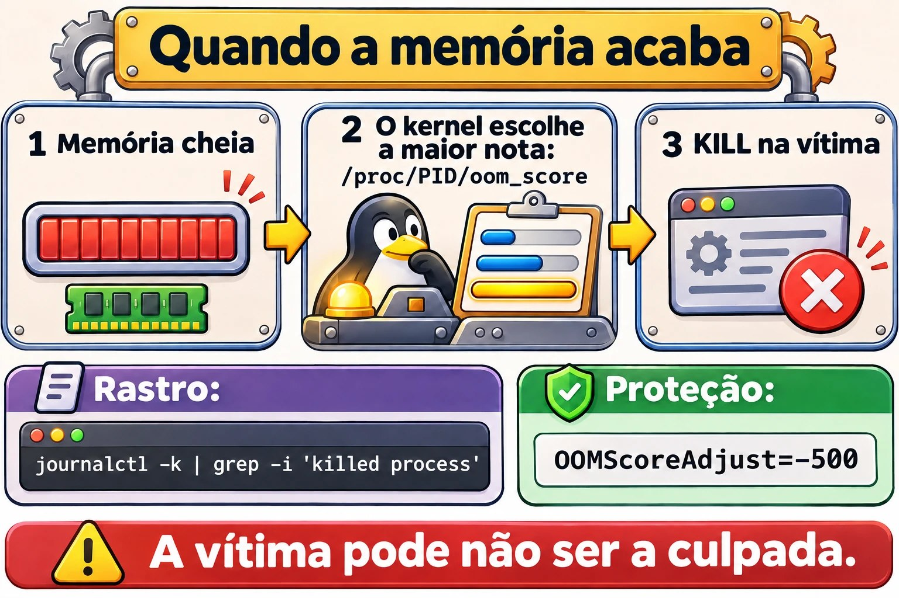

Aula 7.3 · Prioridade e perfis
Encontrar o processo guloso é metade do trabalho. A outra metade é decidir o que fazer com ele quando não dá para simplesmente encerrar, porque aquele relatório precisa terminar e os usuários precisam continuar trabalhando. Nesta aula você aprende a rebaixar, limitar e ajustar o sistema inteiro. No fim vem o Desafio do M7.
Núcleo desta aula: ler carga,
vmstatefreepara saber qual recurso falta; usarniceerenicesabendo o que eles não fazem; conter um processo comCPUQuotaeMemoryMax; achar o rastro do OOM killer; e aplicar e verificar perfis comtuned-adm. O resto é aprofundamento.
| Ficha | |
|---|---|
| Módulo | M7 · Processos e desempenho, aula 3 de 3, com o Desafio do módulo |
| Quando | Semana 11. O Desafio pode ficar para o fim da semana ou para a 12 |
| Ao final | Você acha e contém o processo que devora CPU ou memória, sem reiniciar nada |
| Pré-requisitos | Aulas 4.2, 7.1 e 7.2 |
| Tempo | cerca de 2h, mais 1h para o Desafio |
| Snapshots | m7a3-inicio e m7a3-fim na rocky-lab. Na debian-lab, só leitura e nice |
1 · Aquecimento
Responda antes de ler.
- Um processo com nice 19 tem prioridade maior ou menor que um com nice 0?
- Um servidor ocioso tem um único processo com nice 19. Ele usa pouca CPU por causa do nice?
- Na saída do
free -h, qual coluna diz quanta memória os programas ainda podem usar?
2 · Por que importa
| O chamado | A resposta errada | O que ela causa |
|---|---|---|
| "O relatório deixa todo mundo lento" | Encerrar o relatório | O trabalho se perde. Bastava rebaixar ou limitar |
"Usei renice e no dia seguinte voltou" | Colocar renice no cron | O nice era do processo antigo. O certo é Nice= no unit |
| "O banco caiu sozinho de madrugada" | Reiniciar e esquecer | Foi o OOM killer, e vai acontecer de novo |
"A VM está lenta e o top mostra CPU livre" | Aumentar os vCPUs | A coluna st ou wa estava contando outra história |
"Mudei o swappiness e voltou sozinho" | Mudar de novo | Um perfil do tuned ou um arquivo em /etc/sysctl.d define o valor |
3 · Modelo mental
A CPU é um caixa de banco com fila. O
niceé a gentileza do cliente: quanto maior o número, mais vezes ele deixa o outro passar. Se a fila está vazia, ser gentil não muda nada. OCPUQuotaé outra coisa: é a regra da agência, que limita o atendimento mesmo com o caixa livre. OMemoryMaxé o tamanho da mesa: quem passa do limite é retirado. E otunedé o modo de funcionamento da agência, um conjunto de regras que você liga de uma vez.
Quem falta?
uptime carga maior que nproc? ── sim ── vmstat 2 5
vmstat us alto → CPU, programas → top, tecla P
sy alto → CPU, kernel → muita chamada de sistema
wa alto → esperando disco → estado D, próximos módulos
st alto → o hipervisor não dá CPU → olhar o Proxmox
si/so → trocando com swap → top, tecla M
free available baixo? → quem cresce? RSS
Contenção:
nice / renice só importa quando há disputa
CPUQuota, CPUWeight limita pelo cgroup, por serviço
MemoryMax passou do limite → OOM dentro do cgroup
tuned perfil de ajustes do sistema inteiro
Ponte Windows
| No Windows | No Linux | Onde a comparação engana |
|---|---|---|
| Definir prioridade no Gerenciador de Tarefas | renice | A escala é invertida: número maior significa prioridade menor |
start /low programa | nice -n 19 programa | Sem disputa pela CPU, o efeito é nenhum |
| Limite de CPU e memória num objeto Job, ou WSRM | CPUQuota=, MemoryMax= | No Linux é parte do systemd, por unit |
| Plano de energia | Perfil do tuned | O perfil mexe também em memória, disco e rede |
| Memória em Espera (Standby) | buff/cache | Não é memória perdida: o kernel devolve quando precisa |
4 · O essencial
Ler o recurso que falta
| Coluna | Onde | Significa |
|---|---|---|
us e sy | vmstat, top | CPU em programas e no kernel |
wa | vmstat, top | CPU ociosa esperando E/S |
st | vmstat, top | Tempo roubado: a VM queria CPU e o hipervisor não deu |
si e so | vmstat | Páginas lidas e gravadas no swap |
available | free | O que os programas ainda podem usar |
VSZ | ps | Memória reservada, muito maior que a real |
RSS | ps | Memória física ocupada agora |
Prioridade
| Quero... | Comando |
|---|---|
| Iniciar com menos prioridade | nice -n 10 comando |
| Mudar um processo rodando | renice -n 15 -p PID |
| Mudar todos de um usuário | sudo renice -n 5 -u nome |
| Ver o nice | ps -o pid,ni,comm -p PID |
Mudar no top | Tecla r |
| Prioridade permanente num serviço | Nice=10 no unit |
A escala vai de -20 (mais prioridade) a 19 (menos), e o padrão é 0. Um usuário comum só pode aumentar o número. Baixar, mesmo que seja o próprio processo, exige root.
O limite do nice: ele só compara processos que disputam a mesma CPU. Em kernels com autogroup ativo, ele vale dentro da mesma sessão, e entre cgroups a divisão é feita primeiro por cgroup. Confira com cat /proc/sys/kernel/sched_autogroup_enabled; o arquivo pode não existir.
Conter com cgroup
| Quero... | Comando |
|---|---|
| Rodar uma tarefa limitada | sudo systemd-run --unit=NOME -p CPUQuota=20% comando |
| Mudar agora, sem gravar | sudo systemctl set-property --runtime UNIT CPUQuota=50% |
| Mudar de forma permanente | sudo systemctl edit UNIT, com [Service] e CPUQuota=50% |
| Limitar a memória | MemoryMax=1G |
| Ver o consumo por unit | systemd-cgtop |
100% equivale a um núcleo inteiro: num servidor de 4 núcleos, o teto possível é 400%.
O OOM killer
Quando falta memória e não há mais de onde tirar, o kernel escolhe um processo e o elimina. A vítima pode não ser a culpada: é quem tem a maior pontuação, e isso costuma ser quem ocupa mais memória naquele momento.
| Quero... | Comando |
|---|---|
| Achar o rastro | sudo journalctl -k | grep -iE 'out of memory|killed process' |
| Ver a pontuação | cat /proc/PID/oom_score |
| Proteger um serviço | OOMScoreAdjust=-500 no unit |


tuned
| Quero... | Comando |
|---|---|
| Listar os perfis | tuned-adm list |
| Ver o perfil ativo | tuned-adm active |
| Ver a recomendação | tuned-adm recommend |
| Aplicar | sudo tuned-adm profile NOME |
| Conferir se continua aplicado | sudo tuned-adm verify |
| Desligar os ajustes | sudo tuned-adm off |
Perfis comuns: balanced, throughput-performance, latency-performance, virtual-guest, virtual-host e powersave. Dentro de uma VM, a recomendação costuma ser virtual-guest. Os seus perfis ficam em /etc/tuned/NOME/tuned.conf.
Rocky × Debian
| Rocky | Debian | |
|---|---|---|
nice, renice, vmstat, free | Iguais | Iguais |
tuned | Pode faltar na instalação mínima. Se faltar, dnf install tuned | Disponível no repositório, mas não vem por padrão |
CPUQuota, MemoryMax | systemd | systemd |
5 · Lab guiado
Passo 0 · Snapshot e pasta. No Proxmox: qm snapshot 201 m7a3-inicio. Na rocky-lab:
mkdir -p ~/lab73 && cd ~/lab73
rpm -q tuned || sudo dnf install -y tunedPasso 1 · Perguntar qual recurso falta.
uptime
nproc
vmstat 2 3
free -h
top -b -n1 | head -n 5A primeira linha do vmstat é uma média desde o boot. Leia as seguintes. Com a VM parada, id fica perto de 100.
Passo 2 · Provocar disputa. Os dois processos ficam presos ao mesmo núcleo, para disputarem de verdade.
taskset -c 0 yes > /dev/null &
A=$!
taskset -c 0 nice -n 19 yes > /dev/null &
B=$!
sleep 5
top -b -n2 -d3 -p $A,$B | awk 'NF' | tail -n 2A divisão fica perto de 98% para o de nice 0 e 2% para o de nice 19. Agora iguale:
renice -n 19 -p $A
sleep 2
top -b -n2 -d3 -p $A,$B | awk 'NF' | tail -n 2
renice -n 0 -p $A
sudo renice -n 0 -p $A
kill $A $BCom os dois em 19, fica meio a meio. O renice -n 0 sem sudo falha com Permission denied: o usuário comum só pode aumentar o número.
Passo 3 · Memória de verdade.
python3 -c 'x = b"x" * (300 * 1024 * 1024); import time; time.sleep(600)' &
M=$!
sleep 6
ps -o pid,vsz,rss,pmem,comm -p $M
free -h
ps -eo pid,rss,pmem,comm --sort=-rss | head -n 5
kill $M
sleep 1
free -hO RSS fica um pouco acima de 300 MB, e o processo aparece em primeiro lugar na lista. Depois do kill, a coluna available se recupera.
Passo 4 · Teto de CPU.
sudo systemd-run --unit=lab-gira -p CPUQuota=20% sh -c 'while :; do :; done'
sleep 5
P=$(systemctl show -p MainPID --value lab-gira)
top -b -n2 -d3 -p $P | awk 'NF' | tail -n 1
sudo systemctl set-property --runtime lab-gira CPUQuota=50%
sleep 5
top -b -n2 -d3 -p $P | awk 'NF' | tail -n 1
sudo systemctl stop lab-giraA CPU fica perto de 20% e, depois, de 50%, mesmo com a VM ociosa. É isso que o nice não faz. O PID não mudou: você limitou o processo sem interrompê-lo.
Passo 5 · Teto de memória.
sudo systemd-run --wait -p MemoryMax=200M -p MemorySwapMax=0 python3 -c 'x = b"x" * (300 * 1024 * 1024)'
sudo journalctl -k -n 30 --no-pager | grep -iE 'out of memory|killed process'
free -hO systemd-run --wait informa oom-kill no resultado. No journal aparece Memory cgroup out of memory. O resto do sistema nem percebeu: o teto limitou o estrago àquela tarefa.

Passo 6 · Perfil do tuned.
sudo systemctl enable --now tuned
tuned-adm list | head -n 20
tuned-adm active
tuned-adm recommend
sudo tuned-adm profile virtual-guest
tuned-adm active
sudo tuned-adm verify
sysctl vm.swappiness vm.dirty_ratioO verify confere se o sistema está como o perfil manda. Numa VM, ele pode responder Verification failed com tudo certo: o perfil pede o boost da CPU, e a VM não expõe esse ajuste. Não pare na frase; o motivo de cada falha está no log:
sudo grep 'verify: failed' /var/log/tuned/tuned.log | tail -n 5Na rocky-lab, as linhas citam 'boost' = 'None', expected '1'. É limitação da VM, não erro seu.
Passo 7 · Um perfil seu.
sudo mkdir -p /etc/tuned/lab-curso
sudo tee /etc/tuned/lab-curso/tuned.conf > /dev/null <<'EOF'
[main]
summary=Perfil do curso: virtual-guest com menos swap
include=virtual-guest
[sysctl]
vm.swappiness=10
EOF
sudo tuned-adm profile lab-curso
tuned-adm active
sysctl vm.swappinessCom o include, você herda o perfil inteiro e muda só o que precisa. O swappiness deve aparecer como 10.
Passo 8 · debian-lab. Repita o Passo 1 e o Passo 2. Em seguida, confira se o tuned está disponível com apt-cache policy tuned, sem instalar.
Não limpe ainda. A Quebra 1 usa o perfil lab-curso.
Decida 1
Um relatório pesado precisa terminar hoje, e os usuários reclamam da lentidão. Ele roda como serviço, em um servidor com 8 núcleos. O que você faz?
A) Encerra e pede para rodar à noite. B) renice -n 19 no processo, e confere o efeito. Se o problema continuar, aplica CPUQuota com set-property --runtime. C) Aumenta o swappiness.
Marque uma opção antes.
| Se você marcou | Resultado | Por quê |
|---|---|---|
| A | O trabalho se perde | Era possível ter os dois: o relatório e o sistema respondendo |
| B | Certo | Primeiro o ajuste mais leve, depois o teto. Nada foi reiniciado, e a mudança não fica gravada |
| C | Sem relação | Memória não é o que falta |
Para fixar: mexa sempre primeiro no que dá para desfazer sem interromper.
Decida 2
O banco de dados foi morto pelo OOM killer. Um serviço de relatório tem um vazamento de memória conhecido. O que resolve?
A) Colocar OOMScoreAdjust=-1000 no banco e seguir em frente. B) Definir MemoryMax= no serviço de relatório, e abrir chamado para corrigir o vazamento. C) Desligar o swap.
Marque uma opção antes.
| Se você marcou | Resultado | Por quê |
|---|---|---|
| A | Só desloca o problema | O kernel vai matar outro serviço, e o vazamento continua |
| B | Certo | O teto faz o responsável pagar a conta, e a causa fica registrada |
| C | Piora | Tira a folga e faz o OOM chegar mais rápido |
Para fixar: o culpado e a vítima costumam ser processos diferentes. Procure quem cresceu.
6 · Quebre e conserte

Quebra 1 · O ajuste que saiu do perfil
sudo sysctl -w vm.swappiness=60
sudo tuned-adm verify
sudo grep swappiness /var/log/tuned/tuned.log | tail -n 1Sintoma: o verify falha e informa que o sistema difere do perfil, e agora o log traz uma falha nova, além da do boost.
Diagnóstico: sysctl vm.swappiness mostra 60, e o perfil diz 10. O log confirma: verify: failed: 'vm.swappiness' = '60', expected '10'.
Conserto: sudo tuned-adm profile lab-curso e sudo tuned-adm verify. Na VM, a frase final continua sendo de falha por causa do boost; o que muda é o log, que passa a dizer verify: passed: 'vm.swappiness' = '10'. Se a mudança fosse para valer, ela deveria entrar no perfil.
Na vida real: um arquivo em /etc/sysctl.d pode vencer o valor do perfil, porque o tuned reaplica o sysctl do sistema por padrão. Quando um valor não obedece, procure com grep -r swappiness /etc/sysctl.d /usr/lib/sysctl.d /etc/sysctl.conf.
Quebra 2 · O renice que não durou
sudo systemd-run --unit=lab-nice -p Restart=always -p RestartSec=1 sleep 7000
sleep 1
P=$(pgrep -f 'sleep 7000')
sudo renice -n 15 -p $P
ps -o pid,ni,comm -p $P
sudo kill $P
sleep 3
ps -o pid,ni,comm -p "$(pgrep -f 'sleep 7000')"Sintoma: o nice voltou a 0, com outro PID.
Diagnóstico: o renice vale para aquele processo. Quando o serviço reinicia, nasce outro processo.
Conserto: declare no serviço.
sudo systemctl stop lab-nice
sudo systemd-run --unit=lab-nice -p Nice=15 -p Restart=always -p RestartSec=1 sleep 7000
sleep 1
sudo kill "$(pgrep -f 'sleep 7000')"
sleep 3
ps -o pid,ni,comm -p "$(pgrep -f 'sleep 7000')"
sudo systemctl stop lab-niceAgora o processo novo já nasce com 15. Num serviço instalado, use systemctl edit e Nice=15.
Quebra 3 · O banco morreu de madrugada (narrativa)
De manhã, o banco de dados está parado. No systemctl status, aparece Failed with result 'oom-kill' ou signal=KILL.
Diagnóstico: sudo journalctl -k --since yesterday | grep -iE 'out of memory|killed process'. A linha mostra a vítima, e o dump logo acima lista quanto cada processo ocupava.
Conserto: suba o serviço, descubra quem cresceu naquela hora, limite esse serviço e confira se a memória da VM é suficiente para a soma de tudo.
Para fixar: depois de todo KILL inesperado, olhe o journal do kernel.
Limpeza
sudo tuned-adm profile virtual-guest
sudo rm /etc/tuned/lab-curso/tuned.conf
sudo rmdir /etc/tuned/lab-curso
sudo systemctl stop lab-gira lab-nice 2>/dev/null
pgrep -a -x yes
pgrep -af 'sleep 7000'
tuned-adm activeOs dois pgrep não devem mostrar nada, e o perfil ativo deve ser virtual-guest.
7 · Armadilhas
| Armadilha | O que acontece | Como evitar |
|---|---|---|
| Achar que nice maior é mais prioridade | Faz o contrário | Pense em gentileza: mais gentil, menos CPU |
| Esperar que o nice limite a CPU | Sem disputa, o processo usa tudo | Use CPUQuota |
renice em serviço | Some no próximo restart | Nice= no unit |
Olhar free em vez de available | Parece que falta memória | Leia available |
Comparar pelo VSZ | Sugere um consumo que não existe | Use RSS |
MemoryMax menor que o uso atual | O serviço pode ser morto na hora | Meça antes e defina com folga |
Usar --runtime e achar que ficou | Some no reboot | Use systemctl edit para gravar |
Ajustar sysctl à mão com tuned ativo | Fica fora do perfil, e o verify falha | Coloque no perfil |
Ignorar st numa VM | Você procura o problema no lugar errado | Olhe o host no Proxmox |
ionice sem conferir o escalonador | Pode não ter efeito | Veja /sys/block/DISCO/queue/scheduler |
8 · Quiz
Responda sem olhar. O gabarito está no fim da aula.
- Qual é a faixa do nice, e qual é o padrão?
- Por que
nice -n 19não impede um processo de ocupar 100% de um servidor ocioso? - Qual a diferença entre
set-property --runtimeesystemctl edit? waalto estalto apontam para quais problemas?- Como provar que um processo foi morto pelo OOM killer?
- Como herdar um perfil do
tunede mudar apenas um valor?
9 · Cola
Para saber de cor:
| Quero... | Comando |
|---|---|
| Iniciar gentil | nice -n 10 comando |
| Rebaixar | renice -n 15 -p PID |
| Teto temporário | sudo systemctl set-property --runtime UNIT CPUQuota=50% |
| Rastro do OOM | sudo journalctl -k | grep -iE 'out of memory|killed process' |
| Perfil ativo | tuned-adm active |
| Aplicar perfil | sudo tuned-adm profile NOME |
| Conferir perfil | sudo tuned-adm verify |
Para consultar:
| Quero... | Comando |
|---|---|
| Ver recursos | vmstat 2 5, free -h, uptime |
| Ordenar por memória real | ps -eo pid,rss,pmem,comm --sort=-rss | head |
| Consumo por serviço | systemd-cgtop |
| Tarefa limitada | sudo systemd-run --unit=N -p CPUQuota=20% -p MemoryMax=1G comando |
| Prender a um núcleo | taskset -c 0 comando |
| Baixa prioridade de disco | ionice -c 3 comando |
| Recomendação | tuned-adm recommend |
| Log do tuned | /var/log/tuned/tuned.log |
Flashcards:
- Nice 19 → o mais gentil; só importa quando há disputa.
CPUQuota→ teto, mesmo com a CPU livre.available→ o que os programas ainda podem usar.st→ a VM queria CPU e o hipervisor não deu.- Vítima do OOM → nem sempre é a culpada.
- Restart do serviço → o
renicenão sobrevive; useNice=.
10 · Checklist e fechamento
- [ ] Digo qual recurso falta olhando
vmstatefree - [ ] Uso
niceerenicee sei quando não fazem efeito - [ ] Coloco teto de CPU e memória em um serviço
- [ ] Sei a diferença entre mudança temporária e permanente
- [ ] Acho o rastro do OOM killer no journal
- [ ] Aplico, verifico e crio perfis do
tuned
Último exercício, sem olhar a aula: crie um perfil lab-final que herde de balanced e use vm.swappiness=20. Aplique, prove com o sysctl e o verify, e volte ao virtual-guest removendo o perfil.
Snapshot de fim (no Proxmox):
qm snapshot 201 m7a3-fim11 · Na vida real
Missão, só leitura. Num servidor Linux que você administre (ou com autorização), rode apenas:
uptime
nproc
vmstat 2 5
free -h
ps -eo pid,ni,rss,pmem,comm --sort=-rss | head
ps -eo pid,ni,comm | awk '$2 != 0' | head -n 20
tuned-adm active 2>/dev/null
sudo journalctl -k --since "7 days ago" | grep -iE 'out of memory|killed process'Perguntas para responder:
- Qual recurso está mais perto do limite?
- Numa VM, o
stpassa de zero com frequência? - Algum serviço roda com nice diferente de 0? Foi de propósito?
- Houve OOM nos últimos 7 dias?
- Existe algum perfil do
tunedaplicado? Ele combina com o papel da máquina?
Diário: anote as respostas 1 e 4. Não altere nenhum ajuste.
Amanhã, sem olhar: escreva o que cada coluna (us, sy, wa, st) revela e o comando para colocar um teto de CPU em um serviço.
12 · Aprofundar quando quiser
chrt: escalonamento de tempo real. Um erro aqui pode travar o servidor.CPUWeight=eIOWeight=: divisão proporcional entre serviços.MemoryHigh=: freia o serviço antes de chegar aoMemoryMax.systemd-oomd: encerra processos sob pressão de memória antes do OOM do kernel.perf topepidstat: o que o processo está fazendo enquanto consome CPU.- Criar perfis com
[script],[disk]e[cpu]: vejaman tuned.conf.
DeepTutor (http://10.1.0.149:3782, KB "Curso Linux Sysadmin"):
!explica a diferença entre nice e CPUQuota!feynman o que significam wa e st no vmstat!quiz Aula 7.3, 5 perguntas sobre nice, cgroups e tuned
Desafio do M7 · O processo misterioso
A missão: um processo devora CPU e memória na rocky-lab. Ache, rebaixe a prioridade, limite e encerre do jeito certo, sem reiniciar a VM.
Não há passo a passo. As dicas estão no Gabarito, mas tente sem elas primeiro.
Antes de começar: qm snapshot 201 m7-desafio-inicio. Anote a saída de uptime -s. Depois, simule o incidente com o comando abaixo, sem tentar entender:
sudo systemd-run --unit=cache-sync -p Restart=always -p RestartSec=2 python3 -c 'x = b"x" * (300 * 1024 * 1024); exec("while True: pass")'Requisitos:
- Descubra o PID, o consumo de CPU e de memória, e o nome da unit responsável.
- Rebaixe o processo para nice 19 e prove.
- Coloque um teto de 25% de CPU, sem reiniciar o serviço, e prove com o
top. - Mostre que encerrar pelo PID não resolve.
- Encerre do jeito certo.
- Escreva
~/labm7/relatorio.txtcom o que encontrou, o que fez e como provou.
Critérios de aceite:
systemctl status cache-sync --no-pager
pgrep -af 'while True'
uptime -s
free -h
cat ~/labm7/relatorio.txt- [ ] O relatório tem PID, unit, CPU e memória observados
- [ ] O relatório mostra NI = 19 e a CPU perto de 25%
- [ ] O relatório registra que o processo voltou depois do
kill - [ ] A unit
cache-syncnão existe mais e opgrepnão mostra nada - [ ] O
uptime -sé igual ao anotado no início
Bônus (opcional): rode de novo o comando, mas com -p MemoryMax=200M -p MemorySwapMax=0 e sem Restart=always. Mostre no journal do kernel quem o matou e explique por que o sistema continuou de pé.
Ao terminar: qm snapshot 201 m7-desafio-fim.
Você fechou o M7. Agora você lê processos sem se enganar, escolhe o sinal, protege tarefas longas e contém quem abusa. O próximo módulo começa na Aula 8.1.
Gabarito comentado
Aquecimento
- Menor. Quanto maior o número, mais gentil é o processo.
- Não. Sem disputa, o nice não muda nada, e o processo usa toda a CPU disponível.
- A coluna
available.
Quiz
- De -20 a 19, com padrão 0.
- Porque o nice só decide quem passa na frente quando há disputa. Sem concorrência, todo o tempo livre fica para ele.
- O
--runtimevale até o próximo reboot e não grava em disco. Osystemctl editcria um drop-in permanente. waalto indica CPU esperando E/S, geralmente disco.stalto indica que o hipervisor não está entregando CPU à VM.- Com
sudo journalctl -k, buscandoOut of memoryouKilled process. Num serviço, osystemctl statustambém mostraoom-kill. - Criando
/etc/tuned/NOME/tuned.conf, cominclude=PERFILem[main]e a mudança em[sysctl].
Dicas do Desafio
Leia uma de cada vez, só quando travar.
- Achar:
top, teclasPeM. Oups -eo pid,ni,pcpu,rss,comm --sort=-rss | head. - Origem:
systemctl status PIDresponde o nome da unit. - Rebaixar:
sudo renice -n 19 -p PIDeps -o pid,ni,comm -p PID. - Teto:
sudo systemctl set-property --runtime cache-sync CPUQuota=25%e duas amostras comtop -b -n2 -d3 -p PID | awk 'NF' | tail -n 1. - Provar o retorno:
sudo kill PID, espere uns segundos e rodesystemctl show -p MainPID --value cache-sync. O PID mudou. - Encerrar:
sudo systemctl stop cache-sync. Uma unit temporária desaparece depois de parada.